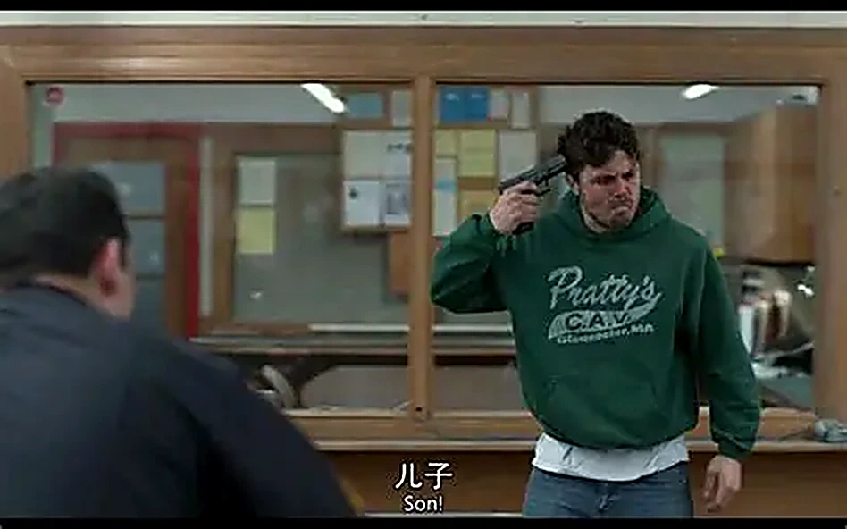

Manchester by the Sea
海边的曼彻斯特
2016 年，肯尼斯·罗纳根执导的小成本剧情片《海边的曼彻斯特》获得包括奥斯卡在内的多项国际大奖。 故事的表层是一个男人回乡料理哥哥后事、处理侄子的监护权；深层却是一个社会边缘人的养成记， 也是人类普遍要面对的问题：一个人如何面对过去的创伤记忆。影片叙事克制而隐忍。
时间陷落
李是波士顿的勤杂工：铲不完的雪、扔不尽的垃圾，拒绝女人、不爱说话。影片用七次闪回揭开他的过去—— 一场因自己疏忽引起的火灾烧掉了房子，夺走了他的三个孩子。他的生活从此被划成“之前”和“之后”， 人留在现在，时间却停在那场火里。

空间焦虑
哥哥乔去世，李回到曼彻斯特料理后事，才知道自己被指定为十六岁侄子的监护人。他想逃，侄子却要留： 波士顿、明尼唐卡都是“他处”，侄子要的是熟悉的房子、朋友和生活。曼彻斯特不只是一个海边小镇， 它是所有记忆的承载体。
记忆的伦理
街角与前妻相遇是全片的高潮。她已经重组家庭，却仍为“决定不再背负往事”而内疚， 说自己“应该被扔进地狱永世不得超生”。救赎在某种意义上是对记忆的背叛—— 李拒绝了世俗意义上的所有救赎可能。
救赎的限度
影片没有给他一个出口。侄子穿上了鲜亮的红衣服，那是影像意义上的救赎；李没有，他只是照旧和侄子出海。 创伤几乎不可能被完全修复，它像一道伤疤留在记忆里。就像福克纳《野棕榈》的结尾： 唯一能延长所爱之人生命的办法，是把他留在记忆里。